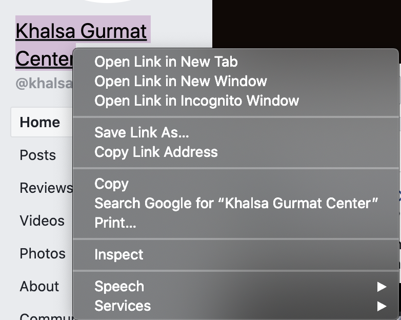
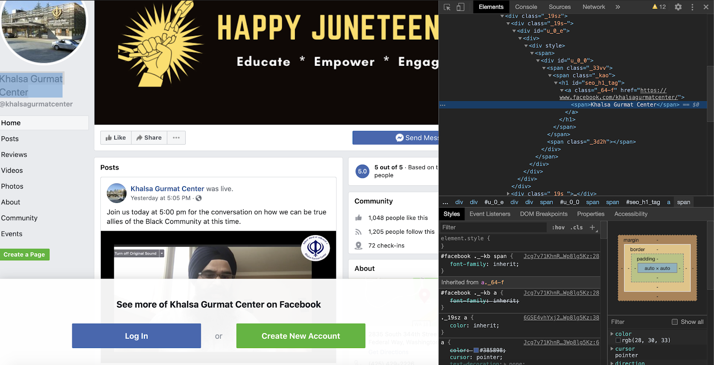
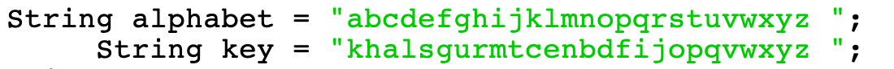
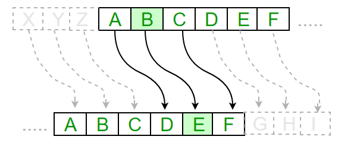
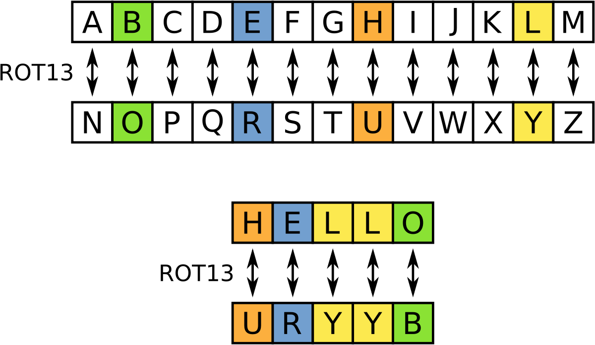
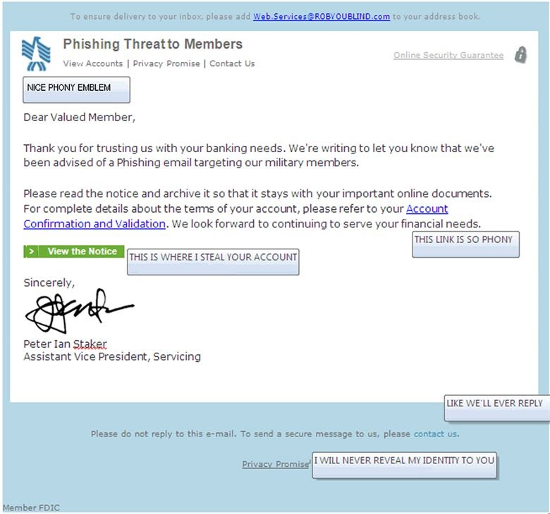
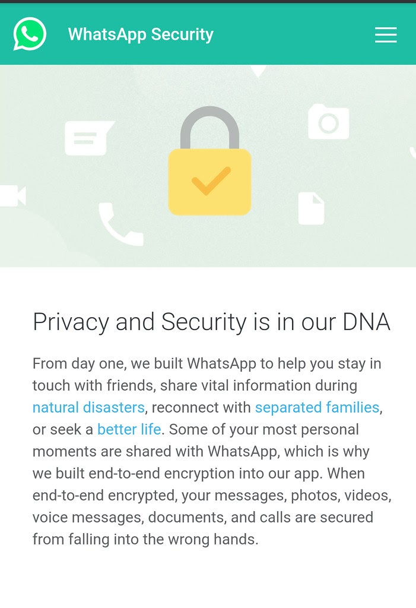
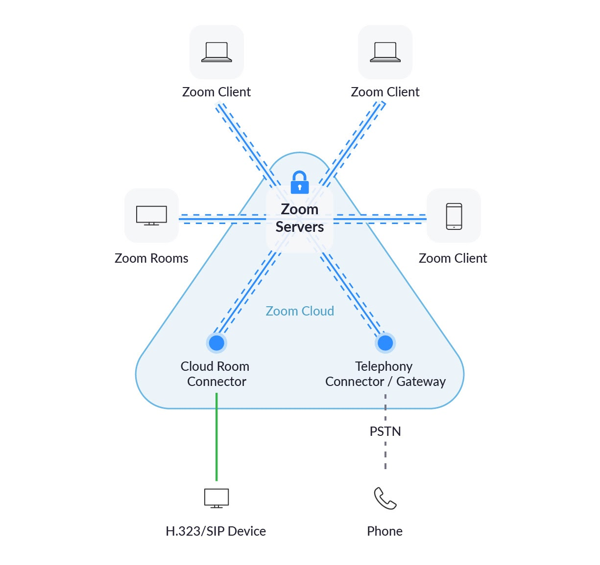
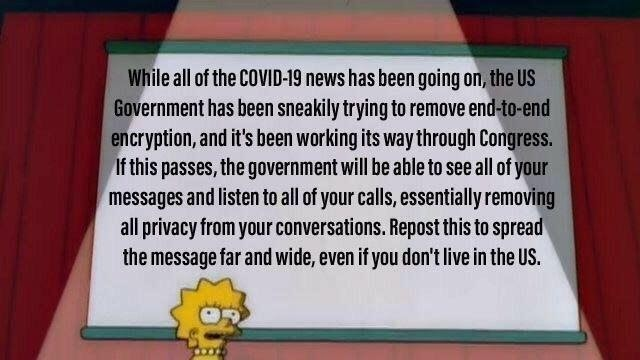

This page includes some of the things we explored after May. Before May we practiced AP Java questions in preparation for the AP test.
As we learned more about HTML/CSS/Javascript (all languages used in making websites), we were introduced to how to publish our own website.
We used the platform github.com. This site is just one of many other platforms where coders can publish their work.
By publishing a website through Github, the code for the website is open-source. Anyone can read the code and/or suggest changes. The code for this website is here.
Go to any website and right-click and click on “inspect element”, this allows you access to all the code that was used when creating the website UI. You are not able to permanently edit it, but you can for only your screen: as shown below. This is one way to view some of the formatting and code of any website even if it’s not open-source.

This is the logo and name for the KGC Facebook page (above)
Then by right-clicking on the name of the page-”Khalsa Gurmat Center”- you see “Inspect”.
On the right, the code for the page comes and the line that is highlighted in blue is what codes what is highlighted on the left, the name of the profile.
Cryptology is the study and practice of codes or secret messages. Codes have been used for centuries during wars and even to this day amongst everyone. Cryptography is used to secure our texts and emails on a daily basis, our bank accounts-when making transactions- our websites and many other things. Cryptology is used all around us.
Within cryptology there are many types of ciphers, we went over a substitution cipher.
Within a substitution cipher, the key to the message that is being encrypted can be either rotated from the original alphabet, scrambled or mapped. In mapping, a word or phrase is the “key”. It is placed in the front (most times) and the rest of the alphabet that hasn’t already been used proceeds it.
An example of mapping:
A shown here, the key is “khalsagurmatcenter” as letters are repeated within that phrase, it is removed from the new ‘key’. In the end both the alphabet and the key have the same number of letters each letters being replaced with its corresponding letter in the key.
If it is a rotation cipher then the letters would just be rotated
As shown in this image, the letter where ‘A’ would normally be, is being replaced by ‘D’. The entire alphabet is being shifted over.
This is another example of a rotation cipher. ROT13 means the alphabet is being shifted 13 letters. The image shows how the original alphabet corresponds with the new key.
Binary numbers are a number system that is used by computers. The binary system is in base-2, which means each digit is represented by a 0 or a 1. Because the binary system is in base-2, the first digit is worth 1 in the decimal number system (or the base-10 number system, the number system we usually use to count), the second digit is worth 2 in the decimal number system, the third digit is worth 4 in the decimal number system, and so on increasing by two times the last digit.
Here is a table with decimal numbers (base-10 numbers) converted to binary numbers:
In computer science, each of these binary digits is called a bit. Computers save data bytes, which are groups of eights bits. Computers are designed to store and manipulate information in bits and bytes.
Here is a diagram of bits and bytes compared to each other:

Using the same skills necessary to convert base-10 numbers to binary, you can convert binary back to base-10. Here is a diagram of how binary can be converted back to base-10:

We had to practice the skill of converting numbers from base-10 to binary because knowing how to do so is a skill required for the AP Computer Science A test.
Here is a video you can use to learn how to convert numbers from base-10 to binary.
Phishing is a complex cybercrime in which individuals are targeted through online formats such as email, telephone, or text message. The victims are misled by the con-artists into revealing sensitive information such as credit card numbers, social security numbers, and other personal data. Disclosing such information often leads to identity theft and/ or significant financial loss.
Phishing scams can be very difficult to spot at times. But here’s a list of what they might do:
This list was found on How to Recognize and Avoid Phishing Scams. Click here for more information
Keep in mind that these messages often look very realistic so you often have to look very closely to spot any inconsistencies. Here is an example of a phishing scam:
End to end encryption is a security measure that ensures your messages are secure. Not all platforms are end to end encrypted which means someone else (usually the company of the platform) could access your messages from another device without your permission. They have the ability to decode any messages you might send to a person without having your device. On platforms that do use end to end encryption, no one has the ability to decode or view your messages. Try as they might, they simply don’t have access because your messages are encrypted from one device all the way to the other. There is no stopping point along the way where they might be decoded. WhatsApp is end to end encrypted while Zoom is not. While Zoom is encrypted, it is not end to end encrypted.
 The Earn It Act is a bill that was proposed to the Senate in 2020 that would allow law enforcement a backdoor into private, encrypted messages. As stated by ACLU, “this bill would undermine the privacy of every single American, stifle our ability to communicate freely online, and may jeopardize the very prosecutions it seeks to enable” even if it may seem like a good idea. It was intended to protect children who are being exploited on social media; however, this idea might cause more harm than good.
Encrypted messaging protects everyone’s privacy whether they are children being protected from sexual predators or government officials being protected from foreign surveillance. The Earn it Act would undermine our right to our privacy. While backdoors may help law enforcement help exploited children, those same backdoors would be available to “criminals and hostile foreign governments.” It would leave our country vulnerable to outside surveillance.
According to the bill, Congress would approve a set of practices that all platforms would be required to adhere to. If they failed to do so, they’d lose their ability to protect free speech. This means platforms like WhatsApp would essentially have to choose between their user's privacy and a lawsuit. Working on this project are people like Attorney General William Barr, who has been trying to force platforms to stop using encryption for several years. His history with platforms and encryption is decades long, but he has never been as successful as he is this time around. He has finally found a way to frame his goal in a way to convince the masses. This further demonstrates how the real intention of the act is to allow law enforcement to monitor us through our messages rather than to stop child pornography.
While considering this bill it should be considered this bill will only limit people from promoting child pornography on big, largely public platfroms. There is nothing stopping criminals from creating their own platforms or using bigger platforms with slight modifications that would allow them to continue as they have. If they have enough of a motive, they would not be put off in the slightest by this bill. Therefore, this bill really doesn’t do much other than impede our privacy rights.
